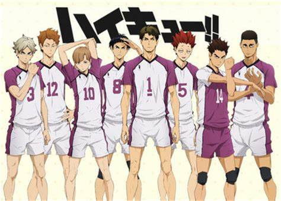
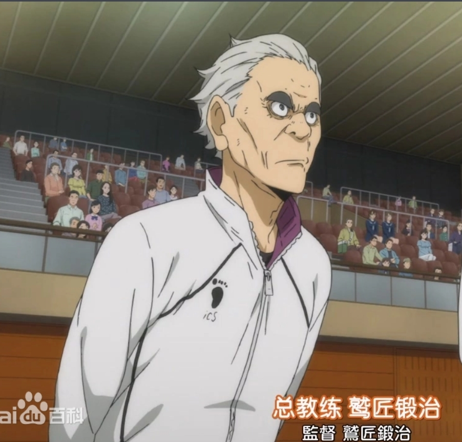
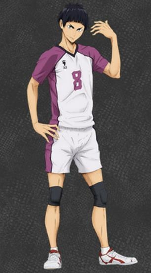
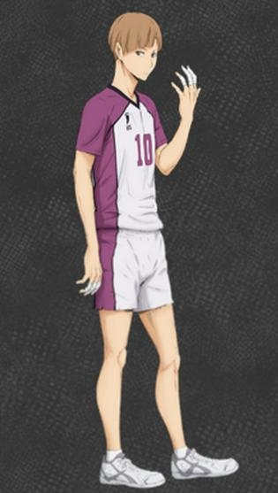
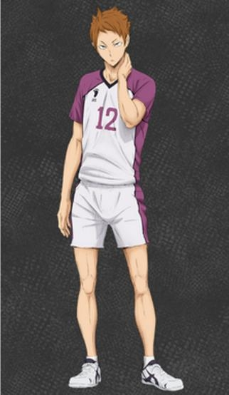
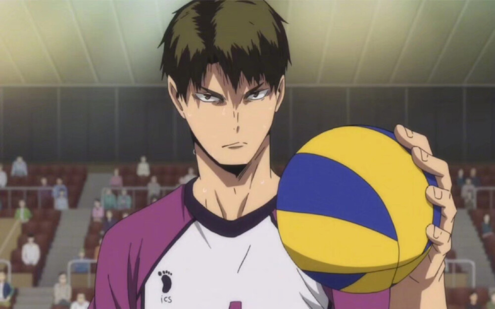
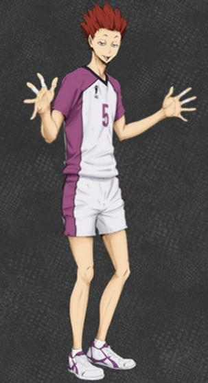
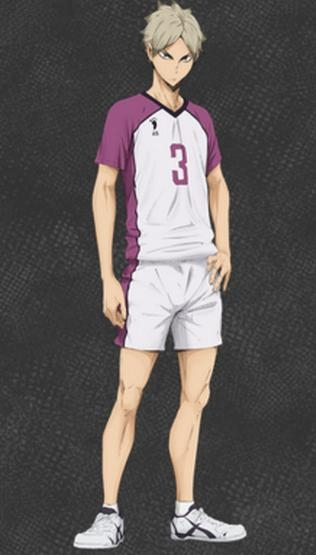
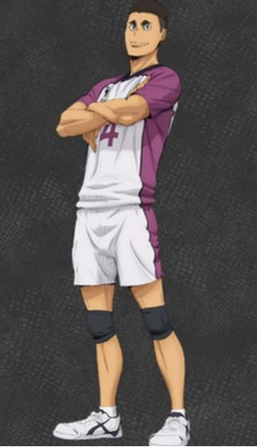
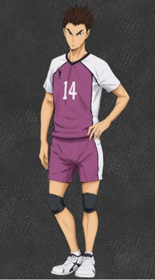

人物背景
白鸟泽高中
追求的理念是单纯的强大，选择排球部队员的时候，都是到处收集情报，把强攻型的球员网罗进来。最后更是以王牌为核心，为王牌服务，只要不妨碍到王牌的进攻，怎样都行。
横幅：狮子奋迅（狮子奋迅） / 强者（强者であれ）

鹫匠锻治，男，日本漫画《排球！！》及其衍生作品中的人物，是白鸟泽学园的总教练，以严厉著称。高中时期加入排球社，接球和弹跳能力都非常高，但因为身高矮经常作为替补无法上场，心有不甘。一直渴望着牛岛压倒一切的“单纯的强大”，曾一度否决翔阳“矮个子也能打排球”的看法。

白鸟泽高中一年级生：五色工

白鸟泽高中二年级生：白布贤二郎、川西太一
白布贤二郎。一流的二传手，思维敏捷行动准确，有时会感到焦躁，冷静下后会让人感到可怕。其他方面并没有太突出，对战乌野时曾和影山暗中杠上，坚信白鸟泽一定会赢。

川西太一。拦网技术高超，可以在短时间内迅速思考对方进攻的可能性。比较听天童的话。

白鸟泽高中三年级生：牛岛若利、天童觉、瀬见英太、大平狮音、山形隼人
牛岛若利。排球社的王牌社员，左撇子。排球杂志中的“高中最受瞩目杂锦”中,今年“特别引人注目”的全国内3人当中的一人，具有压倒性的力量和高度，是“超高中级王牌”。
在国际新闻见报，是日本代表。翔阳指出他是被称为绝对王者。
给人感觉很嚣张，但真实却是意外诚实的人，对自己有着强大的自信。
认为及川很优秀，应该来白鸟泽就读，其他人则不入眼。

天童觉。性格难以捉摸，小时被同伴嫌弃称为怪人，高中入排球社面试时称“只想自由的打排球”。说话太过直白，经常被前辈呵斥没有礼貌，很神奇的和牛若关系较好。在赛场上凭借可怕的“猜测拦网”一度使乌野陷入困境，和翔阳有相似的地方，在赛场上经常扰乱视线，也喜欢在赢下一球后调侃乌野队员，颜艺颇为丰富。

瀬见英太。白布加入后成为替补队员，现为决胜发球员。自称“炫耀自己技术的愿望太过强烈，因此不如白布”。发球实力强劲，可以单人得分。

大平狮音。给人非常可靠的感觉，曾多次在关键时刻鼓舞队内球员，是白鸟泽的调节剂。

山形隼人。主要负责一传和救球。
